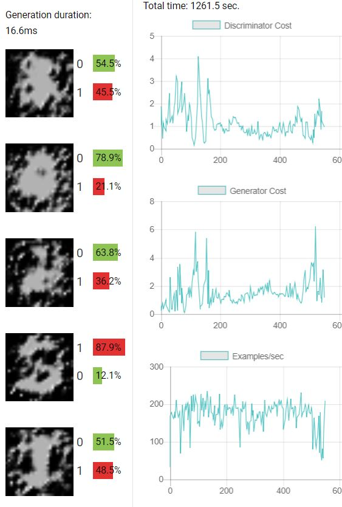

1.2.1 Why does the Generator need the second FC layer to transform the shape [256] output of the first FC layer?
The total number of pixels in the resulting two dimensional output needs to match the total number of pixels in the one dimensional layer. Since the output is a [28,28,1] layer, the one dimensional layer just before has to have shape [784] (784 = 28*28*1). The fully connected layer on the previous input should achieve this, convert shape [100] output to [784] or [256] to [784].
1.2.2 Submit screenshots of some results (generated examples, discriminator predictions on real and fake data, and learning curves as in the plots above).
Following are the Screenshots!
Discrimiator with all FC layers

1.2.3 Can you say anything about the performance of the system's default fully connected model versus the performance of the convolutional model?
The convolutional model is more accurate than the fully connected model. Although there are more parameters in the fully connected model, the convolutional model captures the local features of the image and helps generate better adversarial images.
1.3.1. Were any of your models able to generate any reasonable MNIST digits? If so, were any of your models able to generate all of the MNIST digits (0-9)? Did any of your models get stuck at some point generating one or a few digits only (i.e. mode-collapse)?
One of my models was able to generate a few MNIST digits (3 and 6) to be specific. It could not generate all the MNIST digits. I do not think the model did any better with other digits, just 3 and 6. That particular model did not perform any better to generate other digits, so I believe it got stuck at some point generating only the two digits.
1.3.2 What happened when the discriminator learning rate was greater than the generator learning rate? What about when the generator learning rate was greater than the discriminator learning rate?
(Used ADAM optimizer) Increasing the discriminator learning rate to 0.1 and keeping the generator learning rate did not really improve the performance. Increasing the generator learning rate to 0.1 and reducing the discriminator learning rate back to 0.01 however did produce better results. When learning rates for both the discriminator and the generator were increased, the model performed poorly than when the learning rate was only increased for the generator.